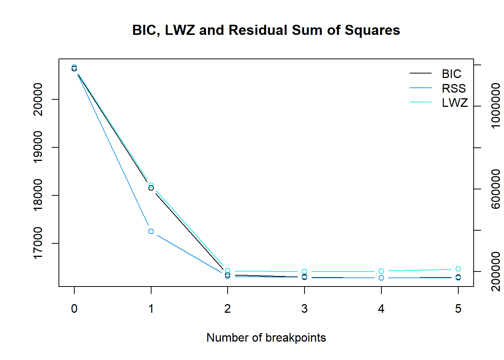

Bab 1 Praproses dan Eksplorasi Data
Bagian ini akan membahas beberapa hal:
- Permasalahan interval waktu data
- Latar belakang fluktuasi harga minyak
- Ekstraksi peubah dummy untuk memodelkan efek hari libur dan perubahan struktural
- Pola data time series dan kestasioneran
- Identifikasi model.
1.1 Interval waktu data
Dari melihat 10 tanggal pertama yang dicatat di dataset harga minyak:
knitr::kable(head(crude0917,n=10),
col.names = c("Tanggal","Harga Penutupan"))| Tanggal | Harga Penutupan |
|---|---|
| 2009-01-02 | 46.34 |
| 2009-01-05 | 48.81 |
| 2009-01-06 | 48.58 |
| 2009-01-07 | 42.63 |
| 2009-01-08 | 41.70 |
| 2009-01-09 | 40.83 |
| 2009-01-12 | 37.59 |
| 2009-01-13 | 37.78 |
| 2009-01-14 | 37.28 |
| 2009-01-15 | 35.40 |
Terlihat bahwa rentang waktu pengamatan data tidak sama. Misal, tidak ada pengamatan saat 1 Januari 2009 karena ada libur tahun baru. Selain itu, ada lompatan dari 2 Januari 2009 ke 5 Januari 2009. Dalam kata lain, harga minyak tidak diamati pada tanggal 3 dan 4 Januari 2009, yang merupakan akhir minggu (hari Sabtu dan Minggu). Pola yang sama terulang di data deret waktu tersebut bagi akhir minggu dan hari libur lainnya - pasar ditutup sehingga harga minyak tidak ada.
Situasi ini dapat ditangani dengan tiga cara umum:
- Abaikan rentang waktu harian yang tidak sama. Gunakan trading days atau hari kerja sebagai rentang waktu.
- Isi data akhir minggu dan hari libur menggunakan suatu bentuk interpolasi.
- Agregasikan data menjadi data mingguan, bulanan, atau tahunan.
Cara pertama sering dipakai dalam peramalan deret waktu. Walaupun tidak ada data hari libur dan akhir minggu, nilai harian reksadana saham CREF dari tahun 2004 sampai 2006 dimodelkan dengan menggangap data tersebut memiliki rentang waktu yang sama (Cryer dan Chan 2008). Pemodelan harga emas harian dari tahun 1985 sampai 1989 juga hanya menggunakan trading days. Dilakukan interpolasi, tetapi hanya untuk data hilang di trading days (Hyndman dan Athanasopoulos 2018). Peramalan harga minyak (Elshendy et al. 2018) juga menggunakan data selama 84 hari kerja saja.
Namun, juga ada justifikasi untuk interpolasi data. Interpolasi data dilakukan saat observasi tersebut dianggap memiliki nilai suatu peubah, tetapi tidak dapat diobservasi. Misal, tidak perlu melakukan interpolasi peubah gaji untuk seorang anak karena dia tidak mungkin bekerja. Dalam kasus ini, harga minyak di hari libur mungkin saja memiliki nilai. Pasar saham dan sekuritas sering mengalami after-hours trading; saat hal tersebut terjadi, harga berubah (Barclay dan Hendershott 2015). Walaupun begitu, bentuk proses tersebut harus diasumsikan untuk diinterpolasi. Misal, jika menggunakan interpolasi linear, diasumsikan bahwa pergerakan harga dari hari kerja ke hari kerja lainnya di hari libur konstan. Ini belum tentu benar - mungkin saja di hari Sabtu, harga masih naik dari hari Jumat, tetapi harga turun di hari Minggu. Interpolasi linear akan mengasumsikan harga turun di Sabtu dan Minggu. Oleh karena itu, interpolasi akan menghasilkan aproksimasi kasar dari proses after-hours trading.
Agregasi data dapat menyelesaikan masalah tersebut karena hasil agregasi dianggap memiliki rentang waktu sama. Misal, mingguan atau bulanan. Agregasi ini harus mengikuti beberapa aturan (Stefan 2019). Untuk harga opening, akan diambil data harga open dari hari pertama di minggu/bulan tersebut - harga tersebut merupakan harga minyak saat pasar dibuka. Harga close diambil dari harga close hari terakhir di minggu/bulan tersebut - harga tersebut merupakan harga minyak saat pasar ditutup. Harga maksimum dan minimum memiliki logika yang mirip.
Namun, agregasi data belum tentu menyelesaikan masalah rentang waktu tak sama. Ada beberapa bulan yang memiliki 28, 30, dan 31 hari. Ini berarti rentang pengamatan satu bulan dapat berarti beberapa jarak waktu yang berbeda. Data mingguan selalu memiliki rentang 7 hari jika data diambil dari hari yang sama di setiap minggu. Dalam kasus ini, ini berarti mengasumsikan data di hari Jumat selalu ada untuk closing, atau data hari Senin selalu ada. Mengingat rentang waktu yang cukup lama (8 tahun), kemungkinan besar ada data di hari-hari tersebut yang tidak ada.
Dari beberapa pertimbangan tersebut, data akan dibiarkan dalam rentang waktu hari kerja. Metode ini sering dilakukan dalam penelitian dan relatif sederhana - tidak perlu dilakukan pemrosesan tambahan. Tidak perlu juga mengasumsikan struktur tertentu pada data hari libur.
Namun, bisa jadi tidak adanya data hari libur tersebut membuat bias dalam model - misal, setelah hari libur biasanya ada lebih banyak pengunjung di toko-toko yang baru buka (Hyndman dan Athanasopoulos 2018). Untuk memodelkan efek hari libur tersebut, akan dibuat variabel dummy di hari-hari setelah libur dan akhir minggu. Variabel ini memodelkan fakta bahwa harga di hari Senin, misal, merespon informasi dari hari Sabtu, Minggu, dan Senin, tidak Senin saja.
Sebelum itu, masih ada data hilang di hari kerja yang diimputasi:
NAs<-crude0917%>% select(`CL=F.Close`) %>% summarise(ties = sum(is.na(.)))
knitr::kable(NAs,
col.names=c("Jumlah NA"))| Jumlah NA |
|---|
| 3 |
Data hilang di data latih akan tetap di-interpolasi dengan fungsi na_interpolation dari package imputeTS (Moritz dan Gatscha 2021). Akan digunakan interpolasi default, yaitu interpolasi linear dengan rumus umum:
\[ y=y_{1}+(x-x_1)\frac{y_{2}-y_{1}}{x_{2}-x_{1}} \]
Jika dimiliki dua titik, dan hendak diduga nilai dari suatu titik di antara dua titik tersebut:
\[ \begin{aligned} x_{1}&: \text{ Waktu pada titik ke-1}\\ y_{1}&: \text{ Harga minyak pada titik ke-1}\\ x_{2}&: \text{ Waktu pada titik ke-2}\\ y_{2}&: \text{ Harga minyak pada titik ke-2}\\ x&: \text{ Waktu pada titik yang ingin diketahui}\\ y&: \text{ Harga minyak pada titik yang ingin diketahui}\\ \end{aligned} \]
library(imputeTS)##
## Attaching package: 'imputeTS'## The following object is masked from 'package:zoo':
##
## na.locf#interpolasi
crude0917<- crude0917 %>% mutate(fixed = na_interpolation(`CL=F.Close`))
ggplot_na_imputations(pull(crude0917,`CL=F.Close`),
pull(crude0917,fixed))Untuk mengekstraksi peubah dummy yang memodelkan efek hari setelah libur, buat sederet data yang berisi semua hari dari tahun 2009 sampai 2017, lalu merge:
lazy_dt(seq(as.Date("2009-01-01"), as.Date("2017-12-31"), by="days")) %>%
rename(X=x) %>% left_join(crude0917) %>% select(fixed) %>%
summarise(ties = sum(is.na(.))) %>% knitr::kable(col.names = "Jumlah NA")| Jumlah NA |
|---|
| 1021 |
Terdapat 1021 data hilang. Buat deret hari akhir minggu dari tahun 2009 sampai 2017. Hari Sabtu pertama di dataset ini adalah Januari 3, 2009:
sats<-seq(as.Date("2009-01-03"), as.Date("2017-12-31"), by="weeks")
suns<-seq(as.Date("2009-01-04"), as.Date("2017-12-31"), by="weeks")
length(c(sats,suns))## [1] 940Ada 940 hari yang merupakan akhir minggu dari 1024 hari libur. Untuk mendapat data hari libur nasional di bursa saham New York, gunakan fungsi holidayNYSE dari package timeDate (Wuertz et al. 2018).
library(timeDate)##
## Attaching package: 'timeDate'## The following objects are masked from 'package:TSA':
##
## kurtosis, skewnesslength(as.Date(holidayNYSE(year=seq(2009,2017,1))))## [1] 80Terlihat bahwa 1020 dari data hilang dapat dijelaskan oleh libur nasional dan akhir minggu. Hanya 1 dari data hilang yang tidak dapat dijelaskan. Buat deret hari Senin dari tahun 2009 sampai 2017, dan hari setelah hari libur nasional. Gunakan package dplyr (Wickham et al. 2022) untuk menghasilkan data.frame tersebut:
mons<-lazy_dt(suns+1)%>%mutate(dumMon=1)
posthol<-lazy_dt(as.Date(holidayNYSE(year=seq(2009,2017,1)))+1) %>%
mutate(x=x+1,
dumHol=1)Lalu, merge data crude dengan data hari Senin dan hari setelah libur nasional.
crudeDummies<- crude0917%>%
left_join(mons,by=c('X'='x')) %>% left_join(posthol,by=c('X'='x')) %>%
mutate(dumMon=ifelse(is.na(dumMon),0,1),
dumHol=ifelse(is.na(dumHol),0,1))Peubah dummy untuk memodelkan efek pasar dibuka saat hari senin dan setelah libur telah dibuat. Peubah tersebut sebenarnya tidak terlalu berkorelasi dengan harga minyak, jadi mungkin saja efek-efek tersebut tidak ada:
crudeDummies %>%
summarize(corHol=cor(dumHol,fixed),
corMon=cor(dumMon,fixed)) %>%
knitr::kable(col.names = c("Senin", "Liburan"),
caption = "Korelasi peubah dummy dengan harga minyak")| Senin | Liburan |
|---|---|
| 0.0038625 | -0.0022236 |
1.2 Pola-pola data dan stasioneritas
Plot dari data tersebut dibuat menggunakan ggplot2 (Wickham et al. 2021):
library(ggplot2)
data.table::as.data.table(crude0917) %>%
ggplot(aes(x=X, y=fixed)) +
geom_line()+
ggtitle("Harga Minyak (CL.F. Close) - USD/Barrel")+xlab("Waktu")+ylab(" ")+
theme_classic()Terlihat bahwa data memiliki pola campuran. Secara kasar, terlihat tren naik pada tahun 2009-2011. Lalu, dari tahun 2011-2014 harga minyak siklik, tetapi rataannya tetap, kira-kira di atas 75 dolar. Harga minyak turun drastis dari tahun 2014-2016. Terakhir, harga minyak naik sedikit lalu stasioner lalu naik sedikit lagi di tahun 2016-2018. Pola-pola tersebut dapat dilihat setelah dilakukan segmentasi melalui dplyr (Wickham et al. 2022). Segmentasi tersebut tidak dilakukan menggunakan metode formal, tetapi secara eksploratif saja:
library(dplyr)
cbbPalette <- c("#000000", "#E69F00", "#56B4E9", "#009E73",
"#F0E442", "#0072B2", "#D55E00", "#CC79A7")
#palet yang inklusif pada buta warna
crude0917 %>%
mutate(Segmen=
ifelse(X<=as.Date('2010-12-31'),"1",
ifelse(X<=as.Date('2014-06-01'),"2",
ifelse(X<=as.Date('2016-01-01'),"3","4")))#buat segmentasi
)%>% data.table::as.data.table()%>%
ggplot(aes(x=X,y=fixed))+
geom_line(aes(color=Segmen))+scale_color_manual(values=cbbPalette)+
ggtitle("Segmentasi Harga Minyak (CL.F Close) - USD/Barrel")+
xlab("Waktu")+ylab(" ")+theme_classic()Namun, sebenarnya segmentasi ini belum terlalu detail. Misal, sebenarnya harga minyak naik dari tahun 2009 ke 2010, lalu mengalami pola siklik dari tahun 2010 ke 2011. Kekasasaran segmentasi ini dapat dilihat dari boxplot. Masih banyak titik-titik yang di luar garis (whisker), yang menandandakan ada banyak amatan ekstrim:
crude0917 %>%
mutate(Segmen=
ifelse(X<=as.Date('2010-12-31'),"1",
ifelse(X<=as.Date('2014-06-01'),"2",
ifelse(X<=as.Date('2016-01-01'),"3","4")))#buat segmentasi
)%>% data.table::as.data.table()%>%
ggplot(aes(x=X,y=fixed))+
geom_boxplot(aes(fill=Segmen))+scale_fill_manual(values=cbbPalette)+
xlab("Waktu")+ylab(" ")+theme_classic()Selain detail pertama yang disebutkan di atas, terlihat bahwa di penurunan harga minyak tahun 2014-2016, sempat ada kenaikan sedikit lalu turun lagi. Dengan menambahkan segmen-segmen tersebut, segmentasi yang detail adalah:
crude0917 %>%
mutate(Segmen=
ifelse(X<=as.Date('2009-10-01'),"1",
ifelse(X<=as.Date('2010-10-31'),"2",
ifelse(X<=as.Date('2014-06-30'),"3",
ifelse(X<=as.Date('2015-02-01'),"4",
ifelse(X<=as.Date('2016-05-01'),"6","7")
))))#buat segmentasi
)%>% data.table::as.data.table() %>%
ggplot(aes(x=X,y=fixed))+
geom_line(aes(color=Segmen))+scale_color_manual(values=cbbPalette)+
ggtitle("Segmentasi Detail Harga Minyak (CL.F Close) - USD/Barrel")+
xlab("Waktu")+ylab(" ")+
theme_classic()Dapat dilihat dari boxplot per kelompok segmentasi tersebut bahwa sama sekali tidak ada amatan ekstrim yang menandakan bahwa pengelompokan sudah baik.
crude0917 %>%
mutate(Segmen=
ifelse(X<=as.Date('2009-10-01'),"1",
ifelse(X<=as.Date('2010-10-31'),"2",
ifelse(X<=as.Date('2014-06-30'),"3",
ifelse(X<=as.Date('2015-02-01'),"4",
ifelse(X<=as.Date('2016-05-01'),"6","7")
))))#buat segmentasi
)%>% data.table::as.data.table() %>%
ggplot(aes(x=X,y=fixed))+
geom_boxplot(aes(fill=Segmen))+scale_fill_manual(values=cbbPalette)+
ggtitle("Boxplot per Segmen Harga Minyak (CL.F Close)")+xlab("Waktu")+ylab(" ")+
theme_classic()1.3 Latar Belakang
Variasi dari segmen tersebut dapat dijelaskan dengan beberapa faktor perubahan harga minyak, yaitu perubahan penawaran dan permintaan minyak mentah karena konflik yang melibatkan negara-negara penghasil minyak dan krisis ekonomi yang melanda negara-negara besar.
1.3.1 Harga Minyak Mentah Tahun 2009
Harga minyak pada awal 2009 sangat rendah karena efek krisis finansial yang melanda Amerika Serikat dan Eropa pada tahun 2008. Krisis finansial tersebut terjadi karena krisis pinjaman kredit yang terjadi di Amerika Serikat. Akibatnya, berbagai bank di Amerika Serikat bangkrut dan ekonomi dunia melemah. Setelah itu, permintaan minyak mentah juga melemah (karena minyak merupakan input besar di ekonomi dunia) dan harga minyak mentah turun dari titik tertinggi, yaitu 133.88 USD pada Juni 2008 ke 39.09 USD per barrel pada Februari 2009 (Li 2021).
Pemerintah Amerika Serikat memberikan respons terhadap krisis tersebut dengan memberikan stimulus kepada pasar finansial seperti bank yang mengalami krisis keuangan. Akhirnya, ekonomi pada pertengahan 2009 mulai pulih dan permintaan minyak mentah meningkat kembali menjadi sekitar 70 USD per barrel pada Juni 2009 (Wearden 2009). Terlihat bahwa dari periode Januari 2009 sampai Desember 2010, harga kontrak berjangka minyak naik:
highlightPalette<-c( "#56B4E9","#D55E00","#D3D3D3")
crude0917 %>%
mutate(Keterangan=
ifelse(X<=as.Date('2009-06-01'),
"Jan 2009 - Jun 2009 (Pemulihan Harga)",
ifelse(X<=as.Date('2010-12-17'),
"Harga Stabil Sebelum Arab Spring",
"Lainnya"))#buat segmentasi
)%>% data.table::as.data.table() %>%
ggplot(aes(x=X,y=fixed))+
geom_line(aes(color=Keterangan))+scale_color_manual(values=highlightPalette)+
ggtitle("Harga Minyak Setelah Krisis 2008")+
xlab("Waktu")+ylab(" ")+
theme_classic()1.3.2 Arab Spring
Peristiwa Arab Spring merupakan peristiwa politik yang terjadi di negara-negara Arab, seperti Mesir, Libya, Tunisia, dan lain-lain. Peristiwa tersebut dimulai sejak awal tahun 2011 yang menjadi titik awal perubahan sistem tatanan politik yang demokratis di negara-negara tersebut. Arab Spring memberikan implikasi penting terhadap pasar minyak internasional (Khan 2014). Konflik yang terjadi negara-negara Arab tersebut (yang merupakan pengekspor minyak terbesar) yang mengganggu proses produksi dan ekspor minyak dan gas bahkan turun sampai nol. Turunnya produksi tersebut yang biasanya menyumbang 5% dari produksi global mengakibatkan harga naik di seluruh dunia. Oleh karena itu, harga minyak siklik di atas 75 dolar per barrel pada waktu tersebut.
highlightPalette<-c("#56B4E9","#D3D3D3","#D3D3D3")
crude0917 %>%
mutate(Keterangan=
ifelse(X<=as.Date('2010-12-17'), "Sebelum Arab Spring",
ifelse(X<=as.Date('2012-12-31'),"Arab Spring",
"Lainnya"))#buat segmentasi
)%>% data.table::as.data.table() %>%
ggplot(aes(x=X,y=fixed))+
geom_line(aes(color=Keterangan))+scale_color_manual(values=highlightPalette)+
ggtitle("Harga Minyak saat Arab Spring")+
xlab("Waktu")+ylab(" ")+
theme_classic()Selain ketidakstabilan yang disebabkan Arab Spring, pertumbuhan ekonomi di Tiongkok meningkatkan permintaan minyak sehingga terdapat tekanan dalam permintaan dan penawaran untuk meningatkan harga minyak (Plumer 2014).
1.3.3 Shale Revolution
Shale Revolution mengacu pada kombinasi rekahan hidrolik dan pengeboran horizontal yang memungkinkan Amerika Serikat untuk secara signifikan meningkatkan produksi minyak dan gas alamnya, terutama dari formasi minyak ketat, yang sekarang mencapai 36% dari total produksi minyak mentah AS. Kapasitas produksi baru ini telah mengurangi ketergantungan Amerika Serikat pada impor minyak dari luar negeri dan terus memberikan dorongan ekonomi yang penting saat negara itu pulih dari resesi 2008. Minyak dan gas merupakan 1,6% dari PDB Amerika Serikat pada tahun 2011 dan terus berkembang. Perkembangan formasi serpih telah berkorelasi dengan peningkatan lapangan kerja, dengan industri minyak dan gas menambahkan 169.000 pekerjaan antara 2010 dan 2012.
highlightPalette<-c("#D3D3D3","#D3D3D3","#56B4E9")
crude0917 %>%
mutate(Keterangan=
ifelse(X<=as.Date('2014-01-01'), "Sebelum Shale Revolution",
ifelse(X<=as.Date('2016-01-01'),"Shale Revolution",
"Setelah Shale Revolution"))
#buat segmentasi
)%>%data.table::as.data.table() %>%
ggplot(aes(x=X,y=fixed))+
geom_line(aes(color=Keterangan))+scale_color_manual(values=highlightPalette)+
ggtitle("Penurunan Harga Minyak 2014-2016")+
xlab("Waktu")+ylab(" ")+
theme_classic()
Perkembangan industri minyak dan gas tersebut meningkatkan produksi minyak dunia. Selain itu, negara-negara produsen minyak di OPEC mempertahankan atau meningkatkan produksi minyak mentah yang. Permintaan minyak di beberapa negara seperti Tiongkok dan di Uni Eropa juga menurun, sehingga faktor-faktor tersebut menurunkan harga minyak pada periode 2014-2016. Harga minyak mentah dunia mengalami penurunan pada akhir tahun 2014 dari US$100 per barel hingga US$40 per barel pada tahun 2016 dan mulai naik pada tahun 2017 (Mead dan Stiger 2015).
1.4 Titik-titik perubahan struktural
Secara lebih formal, dapat dicari titik-titik perubahan struktural di deret waktu tersebut menggunakan fungsi breakpoints dari package strucchange (Zeileis et al. 2019). Algoritma yang dipakai cukup sederhana: dihitung BIC dan Jumlah Kuadrat Sisaan di tiap kemungkinan titik perubahan struktural. ika kita menggunakan model rata-rata yang sederhana seperti lm(y~1), terlihat bahwa dibutuhkan dua break point untuk data tersebut:
library(strucchangeRcpp)
breakOil<-breakpoints(pull(crude0917,fixed)~1)
plot(breakOil)
RSS dan BIC turun drastis setelah menambah dua break point. Break point tersebut dapat diperlihatkan sebagai berikut:
breakpoints(pull(crude0917,fixed)~1,breaks=2)$breakpoints## [1] 461 1488Breakpoint berada di observasi ke-461 (29 Oktober 2010) dan 1488 (26 November 2014) jika menggunakan dua breakpoint. Peubah yang menandakan segmen-segmen yang berbeda dapat dibuat (segmen pertama adalah observasi sebelum observasi ke-461, segmen kedua berada di antara observasi ke-461 dan 1488, dan segmen terakhir adalah observasi setelah observasi 1488).
crudesegmented<- crudeDummies %>%
mutate(B1=ifelse(X >= nth(X,461) & X <= nth(X,1488),1,0),
B2=ifelse(X > nth(X,1488),1,0))
crude0917 %>% data.table::as.data.table() %>%
ggplot(aes(x=X, y=fixed)) +
geom_line()+
geom_vline(xintercept=as.Date('2010-10-29'), col="darkred")+
geom_vline(xintercept=as.Date('2014-11-26'), col="darkred")+
ggtitle("Harga Minyak (CL.F. Close)")+
xlab("Waktu")+ylab("Harga")+
theme_classic()Segmentasi ini akan digunakan sebagai peubah dummy yang menjadi input model ARIMAX. Dapat dilihat matriks peubah dummy yang akan dipakai, termasuk segmentasi dan efek hari setelah libur:
crudesegmented %>% select(dumMon,dumHol,B1,B2) %>% head(10) %>%
knitr::kable()| dumMon | dumHol | B1 | B2 |
|---|---|---|---|
| 0 | 0 | 0 | 0 |
| 1 | 0 | 0 | 0 |
| 0 | 0 | 0 | 0 |
| 0 | 0 | 0 | 0 |
| 0 | 0 | 0 | 0 |
| 0 | 0 | 0 | 0 |
| 1 | 0 | 0 | 0 |
| 0 | 0 | 0 | 0 |
| 0 | 0 | 0 | 0 |
| 0 | 0 | 0 | 0 |
Dapat dilihat bahwa peubah tersebut berkorelasi cukup tinggi dengan harga minyak:
crudesegmented %>% select(B1,B2,fixed) %>% summarize(Break1=cor(B1,fixed),
Break2=cor(B2,fixed)) %>%
knitr::kable()| Break1 | Break2 |
|---|---|
| 0.8605528 | -0.8173909 |
Ekstraksi fitur tersebut sepertinya memiliki kemungkinan lebih baik untuk meningkatkan kebaikan model daripada fitur-fitur sebelumnya.